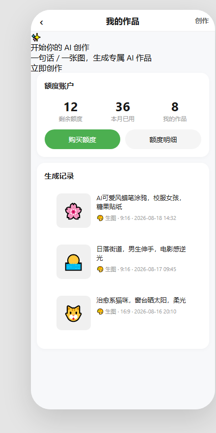
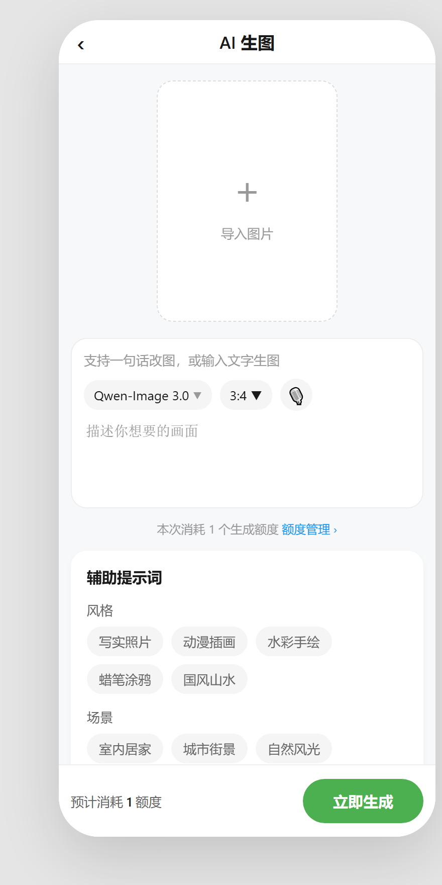
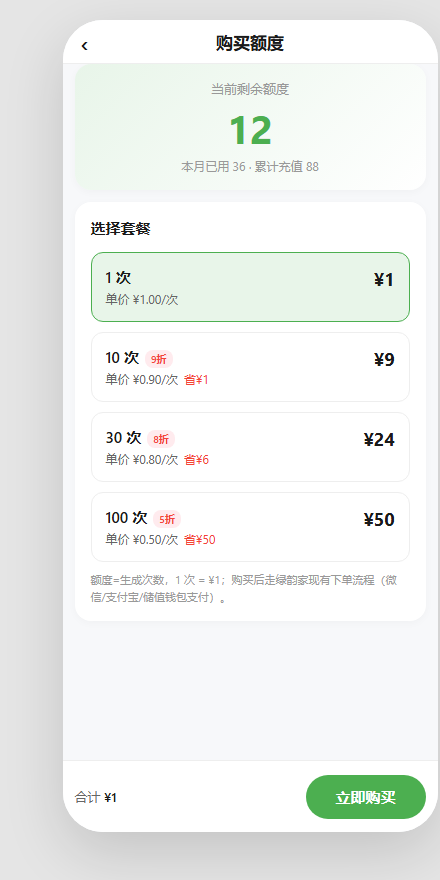
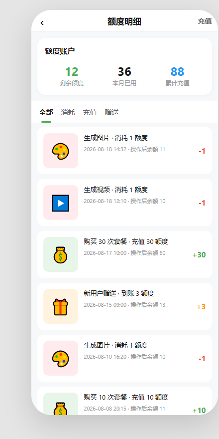

| 版本 | 日期 | 修改人 | 修改原因 |
|---|---|---|---|
| V0.1 | 2026-08-18 | 产品 | 初版：AI 生图/生视频核心功能 + 广场/做同款 + 历史记录 |
| V0.2 | 2026-08-20 | 产品 | 评审精简：去 AI 生视频、创作广场、做同款；合并 AI 创作首页 + 我的作品为单入口页（我的作品）；AI 生图去除模型选择、画面比例仅保留 9:16/16:9；结果弹窗仅保留 分享 + 保存到相册；分享复用《我的》PRD §4.4 分享弹窗（海报主视觉/文案按 AI 场景改造）。详见 PRD 内各章节评审说明。 |
绿韵家 App 数商服务入口下已有「生成视频」「图片生成」等 AI 工具入口，但此前仅作入口保留，点击后无实际功能。经营者（用户）在内容营销、客户触达、朋友圈素材等场景下，对低成本、高效率生成图片/视频素材有明确需求；但普通用户普遍不会撰写专业 AI 提示词（Prompt），导致生成工具使用门槛高、效果不可控。
| 端口/模块 | 本期范围 | 影响说明 |
|---|---|---|
| 绿韵家 App（C端 H5） | 我的作品（AI 创作入口）、AI 生图、购买额度、额度明细 | 本期新增核心功能页（评审精简：去 AI 生视频/创作广场/独立作品详情/做同款，合并为我的作品 + AI 生图两页） |
| 数商服务首页 | AI 工具入口改为跳转我的作品（AI 创作入口） | 本期改动：原「图片生成」入口仅 toast，现跳转真实功能 |
| Coze 工作流 | 提示词扩写、关键词标签拼接、语音转提示词、生图任务调用 | 本期新增后端能力（评审精简：去视频生成子工作流） |
| 运营后台 | 额度配置 | 本期改动：复用现有额度配置能力（评审精简：去广场模板管理、UGC 审核） |
本流程覆盖「空白生成」主路径（评审精简：去广场/去视频/去做同款）：
📎 权威来源：本流程图依据本期需求梳理会议纪要绘制，节点与 §3.2 文字流程一一对应。
| 层级 | 模块/数据 | 说明 |
|---|---|---|
| 前端（App H5） | 我的作品（入口 + 历史）、AI 生图页、购买额度、额度明细、分享弹窗（复用） | 内嵌 H5，复用绿韵家 App 导航与登录态（评审精简：去 AI 生视频页/广场页/独立作品详情页） |
| 接入层 | 绿韵家服务端 API | 负责额度校验、任务下发、结果回传、历史记录存储、分享弹窗接口 |
| 生成层 | Coze Bot / 工作流 | 提示词处理、调用平台内置生图插件（默认 Qwen-Image 3.0） |
| 数据层 | 作品库（content_type=image）、额度账户、额度流水 | ⚠️ 待确认 @研发：表名与字段；评审精简：去广场内容表、审核记录表 |
| 起始状态 | 动作 | 前置条件 | 目标状态 |
|---|---|---|---|
| 未开始 | 进入我的作品点击立即创作 | 已登录 | 参数配置中 |
| 参数配置中 | 点击生成 | 提示词非空且额度 ≥ 1 | 生成中 |
| 参数配置中 | 点击生成 | 额度不足 | 额度不足弹窗 |
| 生成中 | 生成成功 | Coze 返回结果 | 生成成功 |
| 生成中 | 生成失败 | Coze 返回错误/超时 | 生成失败 |
| 生成成功 | 保存到相册 | 用户点击 | 已保存 |
| 生成成功 | 分享 | 用户点击 | 唤起分享弹窗 |
需求影响范围：数商服务 → AI 工具入口进入后的首个落地页（替代原「AI 创作首页」+「我的作品/历史记录」两页合并），用户从零创作或管理已有作品。
涉及终端明细：绿韵家 App C 端 H5。

界面与展示规则
业务逻辑与边界条件
| 字段名称 | 需求说明 | 备注 |
|---|---|---|
| 缩略图 | 生成结果封面 | 取《作品表》.result_url |
| 提示词 | 生成时使用的提示词 | 取《作品表》.prompt，单行截断 |
| 类型 | 固定生图 | 取《作品表》.content_type，本期仅生图 |
| 参数 | 比例（9:16 / 16:9） | 取《作品表》.params_json.ratio |
| 生成时间 | 任务完成时间 | 取《作品表》.created_at |
| 功能名称 | 功能说明 | 显示位置 | 权限 | 前置条件 | 备注 |
|---|---|---|---|---|---|
| 创作（导航） | 进入 AI 生图页 | 导航栏右侧 | 登录用户/游客均可点击 | 无 | 游客点击先登录 |
| 立即创作（CTA） | 进入 AI 生图页 | 顶部 CTA 卡 / 空态按钮 | 登录用户/游客均可点击 | 无 | 游客点击先登录 |
| 购买额度 | 跳转购买额度页（4.1.3） | 额度账户卡 | 登录用户 | 已登录 | 未登录先登录 |
| 额度明细 | 跳转额度明细页（4.1.4） | 额度账户卡 | 所有 | 无 | — |
| 生成记录项 | 进入作品详情（4.1.1.5） | 生成记录列表 | 登录用户 | 已登录 | — |
本期无独立「作品详情」标签，作为 4.1.1 的子节：
invite_code 邀请关系（接口 GET /api/share/qrcode?terminal={app|mini}&invite_code={code}），落地页复用 §4.4 对应终端的引导页 / 小程序首页；| 字段名称 | 取值逻辑说明 |
|---|---|
| 剩余额度 / 本月已用 / 累计充值 | 同 4.1.3.7，调「额度账户接口」 |
| 我的作品数 | 取《作品表》中 user_id = 当前用户且 status = success 的记录数 |
| 生成记录 | 取《作品表》中 user_id = 当前用户、content_type=image 的记录，按 created_at 倒序分页 |
| 作品详情 | 取《作品表》按 content_id 查询 |
需求影响范围：用户从零开始生成图片或使用参考图改图。
涉及终端明细：绿韵家 App C 端 H5。

界面与展示规则
业务逻辑与边界条件
| 区域 | 字段 | 功能逻辑说明 | 备注 |
|---|---|---|---|
| 比例 | 输出比例 | 段控二选一：9:16（默认）/ 16:9 | 默认 9:16 |
| 输入 | 提示词 | 必填，支持多行文本，最大 ⚠️ 待确认 @研发 字 | — |
| 输入 | 参考图 | 可选，上传后走图生图/改图逻辑 | 支持 jpg/png，最大 ⚠️ 待确认 @研发 MB |
| 功能名称 | 功能说明 | 备注 |
|---|---|---|
| 导入图片 | 调用相册/文件选择器上传参考图 | 上传成功后预览区显示缩略图 |
| 画面比例切换 | 9:16 / 16:9 段控二选一 | 默认 9:16 |
| 语音输入 | 录音并转写成提示词 | 需麦克风权限 |
| 立即生成 | 提交生成任务 | 额度不足时拦截 |
| 字段名称 | 取值逻辑说明 |
|---|---|
| 比例选项 | 前端写死 9:16 / 16:9，与模型能力无关 |
| 最终提示词 | 用户输入 + 已选标签文本拼接，提交前经 Coze 工作流扩写优化 |
| 默认模型 | 后端配置为 Qwen-Image 3.0（⚠️ 待确认 @研发 是否纳入运营可配） |

| 字段名称 | 需求说明 | 备注 |
|---|---|---|
| 套餐 ID | 商品 SKU，唯一标识 | p1 / p10 / p30 / p100 |
| 次数 | 充值额度数（生成次数） | 1 / 10 / 30 / 100 |
| 价格 | 实付金额（CNY） | ¥1 / ¥9 / ¥24 / ¥50 |
| 单价 | 每生成次数单价 | ¥1.00 / ¥0.90 / ¥0.80 / ¥0.50 |
| 节省 | 相对单次购买所省金额 | ¥0 / ¥1 / ¥6 / ¥50 |
| 折扣角标 | 名称旁展示的折扣标签 | — / 9 折 / 8 折 / 5 折 |
| 选中态 | 默认 1 次套餐选中，列表项整体高亮 | 绿色边框 + 浅绿背景 |
| 按钮名称 | 功能说明 | 显示位置 | 权限 | 前置条件 |
|---|---|---|---|---|
| 立即购买 | 提交订单进入现有下单流程 | 底部固定操作栏 | 登录用户 | 已选中任意套餐（默认 1 次） |
| 返回 | 回到上一页 | 导航栏左侧 | 所有 | 无 |
| 字段名称 | 取值逻辑说明 |
|---|---|
| 剩余额度 | 调「额度账户接口」GET /quota/account |
| 本月已用 | 调「额度账户接口」GET /quota/account.month_used |
| 累计充值 | 调「额度账户接口」GET /quota/account.total_recharged |
| 套餐列表 | 调「商品配置接口」GET /product/list?category=quota_pack，返回静态配置 |
| 合计金额 | 前端根据选中套餐实时计算（price 字段） |
| 订单提交 | POST「创建订单接口」复用绿韵家现有订单服务，body 携带 product_id 与 quantity=1 |

| 字段名称 | 需求说明 | 备注 |
|---|---|---|
| 类型（data-type） | 流水分类 | consume / recharge / gift |
| 图标 | 类型对应 emoji 图标 + 背景色 | 🎨/▶️ 消耗（红底）· 💰 充值（绿底）· 🎁 赠送（橙底） |
| 操作说明 | 一行文案说明本次操作 | 如「生成图片 · 消耗 1 额度」「购买 30 次套餐 · 充值 30 额度」 |
| 时间·操作后余额 | 操作发生时间 + 操作后账户剩余 | 取《额度流水表》.created_at + .balance_after |
| 数量 ±N | 本次操作额度变化量，正负符号 | 消耗 -1（红） / 充值 +N（绿） / 赠送 +N（橙） |
| 按钮名称 | 功能说明 | 显示位置 | 权限 | 前置条件 |
|---|---|---|---|---|
| Tab 全部 | 显示所有流水 | 列表上方 Tab | 所有 | 无 |
| Tab 消耗 | 仅显示消耗类流水 | 列表上方 Tab | 所有 | 无 |
| Tab 充值 | 仅显示充值类流水 | 列表上方 Tab | 所有 | 无 |
| Tab 赠送 | 仅显示赠送类流水 | 列表上方 Tab | 所有 | 无 |
| 充值 | 跳转购买额度页 | 导航栏右侧 | 登录用户 | 已登录 |
| 返回 | 回到上一页 | 导航栏左侧 | 所有 | 无 |
| 字段名称 | 取值逻辑说明 |
|---|---|
| 剩余额度 / 本月已用 / 累计充值 | 同 4.1.3.5，调「额度账户接口」 |
| 流水列表 | 调「额度流水接口」GET /quota/ledger?type=[tab]&page=1&size=20 |
| 类型分布 | 前端按 data-type 过滤：consume / recharge / gift |
需求影响范围：原「图片生成」入口仅 toast 提示，本期改为真实跳转我的作品（AI 创作入口）。
涉及终端明细：绿韵家 App C 端 H5。
本项目未接入《泰小虎埋点表 v2.3》，埋点规范以独立文档 《绿韵家埋点规范 v1.0》 维护。本期涉及事件清单如下：
| 事件英文名 | 显示名 | 触发时机 | 必含参数 |
|---|---|---|---|
| ai_mine_enter | 进入我的作品 | 进入我的作品页（AI 创作入口） | source（入口来源） |
| ai_create_click | 点击立即创作 | 点击「立即创作」CTA / 空态按钮 / 导航「创作」 | source（cta / empty / nav） |
| ai_image_gen_click | 进入AI生图 | 从我的作品点击进入 AI 生图页 | source |
| ai_tag_select | 选择辅助标签 | 点击关键词标签 | group, tag_name |
| ai_voice_input | 语音输入 | 完成语音转写 | - |
| ai_generate_submit | 提交生成任务 | 点击立即生成 | ratio, cost |
| ai_generate_success | 生成成功 | 结果返回成功 | content_id, ratio |
| ai_generate_fail | 生成失败 | 结果返回失败 | error_code |
| ai_share_click | 分享 | 点击分享（作品详情/结果弹窗） | content_id, scene（detail / result） |
| ai_save_album_click | 保存到相册 | 点击保存到相册 | content_id |
正式埋点文档建立后，以独立 Markdown 文件维护并链接引用。
| # | 事项 | 干系人 | 状态 |
|---|---|---|---|
| 1 | KPI 具体目标值（入口点击率、人均生成次数、购买转化率） | @运营 | 待确认 |
| 2 | 运营后台能力范围与表结构设计 | @研发 | 待确认 |
| 3 | 提示词最大字数、上传素材大小与格式限制 | @研发 | 待确认 |
| 4 | 生成任务最长等待时间与轮询策略 | @研发 | 待确认 |
| 5 | 分享海报主视觉、文案是否运营可配（复用§4.4 现有后台能力 or 新增配置项） | @运营 / @研发 | 待确认 |
| 6 | 默认生图模型是否纳入运营可配（当前后端固定 Qwen-Image 3.0） | @研发 | 待确认 |
| 7 | 我的作品删除策略（逻辑删除 / 物理删除 / 本期不开放删除 UI） | @产品 / @研发 | 待确认 |
| 8 | 埋点规范正式文档建立 | @数据 / @研发 | 待确认 |
ℹ️ 本工作流设计以泰小虎「图片识别工作流」（txh_center_optimize，节点范式：code 输入预处理 → llm 意图/类型识别 → loop 调识别插件 → code 清洗 → llm 信息整合 → code 聚合）为骨架重设计。该骨架已验证可用，但原版为单工作流平铺、且未使用记忆库节点（知识库参数 knowledgeFCParam:{} 为空、全部业务知识硬编码在提示词中）。本期在此基础上补齐两项能力：① 子工作流拆分（主工作流编排 + 4 个子工作流）；② 记忆库设计（长期用户记忆 / 短期会话记忆 / 系统记忆分离，详见 §10.7）。
| 层级 | 工作流 | 职责 | 关键节点类型 |
|---|---|---|---|
| 主 | AI 创作编排 ai_create_orchestrator | 接收前端参数（ratio、prompt、reference_image），做输入归一化与意图识别（本期仅生图，预留扩展），路由到子工作流，聚合结果并写记忆库 | start / code / llm / condition / sub_workflow / memory_write / variable_merge / end |
| 子 A | 提示词增强 prompt_enhance | 把「用户文本 + 标签 + 语音 + 参考图」转化为模型友好的结构化提示词，含敏感词合规校验 | start / code / llm / code / end |
| 子 B | 图片生成 image_generate | 参数校验 → 额度校验 → 调用图像生成插件（默认模型 Qwen-Image 3.0）→ 轮询 → 结果结构化 | start / code / memory_read / condition / plugin / code / end |
| 子 C | 作品后处理 post_process | 二次合规审核 → 相似去重 → 缩略图 → 写作品记录（content_type=image）→ 扣额度 | start / code / plugin / condition / end |
| # | 节点 | 类型 | 职责 | 输入 → 输出 | 记忆库 | 失败重试 |
|---|---|---|---|---|---|---|
| 1 | 开始 | start | 接收前端下发参数（评审精简：本期仅生图，无意图分流与模型/清晰度/时长参数） | user_text, selected_tags（数组）, voice_text（可选）, reference_images（数组）, ratio → — | 无 | — |
| 2 | 输入归一化 | code | 复用泰小虎「提取用户输入的文案和图片信息」范式：标签翻译为结构化描述、参考图 URL 抽取（正则解析 markdown/URL）、语音文本归一化 | user_text, tags, voice_text, images → normalized_input | 读：session 会话上下文写入 | timeout 30s，retry 0 |
| 3 | 意图与场景识别 | llm | 复用泰小虎「意图识别」范式：系统提示词判断 生图，提取风格、比例、主体等结构化参数并改写查询；强制 JSON 输出（评审精简：scene_type 固定为 image，不再分流生视频/做同款） | normalized_input → （scene_type=image, structured_params, rewritten_query） | 无（纯推理） | timeout 180s，retry 1 |
| 4 | 是否需提示词增强 | condition | 若用户已填完整 prompt 则跳过子工作流 A，直接进生成 | scene_type, prompt → 路由 | 无 | — |
| 5 | 子工作流A：提示词增强 | sub_workflow | 调用 prompt_enhance，返回 enhanced_prompt | normalized_input, scene_type → enhanced_prompt | 读写：user_style（见 §10.7） | 继承子流程 |
| 6 | 生成类型路由 | condition | 本期仅生图，预留扩展为多分支的条件节点（当前恒走图片生成） | scene_type → 路由 | 无 | — |
| 7 | 子工作流B：图片生成 | sub_workflow | 调用 image_generate（默认模型 Qwen-Image 3.0），返回 image_result | enhanced_prompt, ratio → image_result | 读写：额度账户（业务） | 继承子流程 |
| 8 | 子工作流C：作品后处理 | sub_workflow | 调用 post_process，返回 work_record（content_type=image） | gen_result, user_id → work_record | 写：user_prompt_tpl / user_gen_stat | 继承子流程 |
| 9 | 写用户记忆 | memory_write | 把本次成功生成的风格偏好、提示词模板写入长期记忆（累积画像） | work_record → 记忆写入确认 | 写：user_style / user_prompt_tpl / user_gen_stat | timeout 10s，retry 1（失败不影响主结果） |
| 10 | 变量聚合 | variable_merge | 聚合各子工作流产物 | 各分支输出 → merged | 无 | — |
| 11 | 结束 | end | 返回最终结果与各中间产物 | merged → result | 无 | — |
| # | 节点 | 类型 | 职责 | 输入 → 输出 | 记忆库 | 失败重试 |
|---|---|---|---|---|---|---|
| 1 | 开始 | start | 接收归一化输入与场景类型 | normalized_input, scene_type → — | 无 | — |
| 2 | 标签规范化 | code | 复用泰小虎「提取用户输入」范式：把 selected_tags 翻译为模型友好描述（如「国风」→「中国水墨风格, 留白构图」） | tags → tag_desc | 无 | timeout 30s |
| 3 | 语音转提示词（条件） | llm | 若 voice_text 存在，LLM 将口语化语音转写为画面细节描述，补全主体/场景/动作 | voice_text → voice_prompt | 无 | timeout 120s，retry 1 |
| 4 | 提示词扩写 | llm | 复用泰小虎「信息整合」范式：系统提示词补全风格/光线/构图/镜头运动，强制 JSON 输出最终提示词；参考用户长期风格画像做个性化 | user_text+tag_desc+voice_prompt → final_prompt(JSON) | 读：user_style 默认填充 | timeout 180s，retry 1 |
| 5 | 敏感词合规校验 | code | 复用泰小虎「清洗 OCR 内容」范式：黑名单 + 正则过滤违规/侵权词，命中则降级替换并返回 flag | final_prompt → （safe_prompt, blocked） | 无（命中写合规日志到业务库） | timeout 30s |
| 6 | 结束 | end | 返回增强后提示词 | safe_prompt → enhanced_prompt | 无 | — |
| # | 节点 | 类型 | 职责 | 输入 → 输出 | 记忆库 | 失败重试 |
|---|---|---|---|---|---|---|
| 1 | 开始 | start | 接收增强提示词与参数 | enhanced_prompt, model, ratio, reference_image? → — | 无 | — |
| 2 | 参数校验 | code | 校验 model / ratio 合法，reference_image 格式 | model, ratio → valid? | 无 | timeout 30s |
| 3 | 读额度账户 | memory_read | 读取用户剩余额度（或调用业务接口） | user_id → quota | 读：额度账户（业务库/记忆） | timeout 10s，retry 1 |
| 4 | 额度是否充足 | condition | 不足则短路返回 quota_insufficient，前端弹额度引导 | quota, cost → 路由 | 无 | — |
| 5 | 调用图像生成插件 | plugin | 调用 Coze 平台内置图像生成能力（异步任务），复用泰小虎 loop 调插件的批处理范式 | prompt, model, ratio, image? → task_id | 无 | timeout 长，retry 1 |
| 6 | 轮询结果 | code | 轮询任务状态直到完成或超时（超时策略见待确认项） | task_id → raw_result | 无 | 轮询内置重试 |
| 7 | 结果结构化 | code | 成功 → image_url，失败 → error_code | raw_result → image_result | 无 | timeout 30s |
| 8 | 结束 | end | 返回图片结果 | image_result → result | 无 | — |
| # | 节点 | 类型 | 职责 | 输入 → 输出 | 记忆库 | 失败重试 |
|---|---|---|---|---|---|---|
| 1 | 开始 | start | 接收图片生成结果 | gen_result, user_id, scene_type=image, prompt → — | 无 | — |
| 2 | 二次合规审核 | code / llm | 对生成结果做内容安全复审（复用意图识别范式），不通过则标记不展示 | gen_result → audit_pass? | 无（命中写合规库） | timeout 60s |
| 3 | 相似去重 | code | 与用户历史作品比对，避免重复归档 | gen_result, user_id → is_dup? | 读：历史作品（业务库） | timeout 30s |
| 4 | 缩略图生成 | plugin | 生成作品列表用缩略图（评审精简：广场下架后仅服务于我的作品列表） | gen_result → thumb_url | 无 | timeout 30s，retry 1 |
| 5 | 写作品记录 | code | 写入数据层作品表（content_type=image，云端保存，登录用户可见） | gen_result, thumb_url → work_record | 无 | timeout 30s，retry 1 |
| 6 | 扣减额度 | code | 调用业务接口扣减 1 额度 | user_id, cost=1 → quota_after | 写：额度账户（业务库） | timeout 30s，retry 2（幂等） |
| 7 | 结束 | end | 返回作品记录 | work_record → result | 无 | — |
基于「长期用户记忆 / 短期会话记忆 / 系统记忆」三层分离。Coze 记忆节点类型以 memory_read / memory_write 表示（具体 schema 以 Coze 平台为准，导入时按平台节点校准）。
| 记忆类型 | Key 设计 | 写入节点 | 读取节点 | 存储内容 | TTL |
|---|---|---|---|---|---|
| 长期·用户风格画像 | user_style:{user_id} | 主流程「写用户记忆」(10.2-10)；子工作流A「提示词扩写」累积 | 子工作流A「提示词扩写」默认填充辅助生图 | 常用风格标签、色调、构图、镜头偏好（结构化 JSON） | 长期 |
| 长期·成功提示词模板 | user_prompt_tpl:{user_id} | 子工作流C「写作品记录/扣减额度」成功后 | 子工作流A 提示词增强 | 历史高满意度的提示词模板（用于默认推荐与风格复用） | 长期 |
| 长期·生成偏好统计 | user_gen_stat:{user_id} | 子工作流C 完成后 | 个性化推荐 / 运营分析 | 生图量、常用比例、成功率 | 长期 |
| 短期·会话上下文 | session:{conv_id} | 主流程各节点 | 主流程各节点 | 本次生成的 prompt / 参数 / 中间结果 | 本次会话 |
| 系统·（不存 Coze 记忆） | 业务库表 | — | — | 额度账户、路由规则、审核策略、模型配置 | — |
⚠️ 明确不写入记忆库的内容：原始生成图（存对象存储）、违规/侵权 prompt（存合规黑名单库）、用户隐私原图（即时销毁，不落库）。
① 意图与场景识别（主流程节点3，复用泰小虎「意图识别」范式）
# 角色
你是绿韵家 AI 创作的「意图与场景识别节点」。结合用户输入、所选标签、参考图，
判断本次是 生图，并提取结构化生成参数。
## 输出格式（强制 JSON，不要解释）
{
"scene_type": "image|video|same",
"structured_params": {"style":"","ratio":"","clarity":"","duration":""},
"rewritten_query": "改写后的生成诉求"
}
② 提示词扩写（子工作流A 节点4，复用泰小虎「信息整合」范式）
【用户输入】{user_text}
【已选标签】{tag_desc}
【语音转写】{voice_prompt}
【用户历史风格画像】{user_style} # 来自记忆库 user_style:{user_id}
请生成一段适合 {model} 的提示词：
1. 保留用户原始意图；
2. 将标签与语音扩展为具体画面元素（风格/场景/光线/构图/镜头运动）；
3. 参考用户历史风格画像做个性化，但不过度偏离本次诉求；
4. 输出连贯中文提示词，必要时补英文术语；
5. 不添加用户未提及的敏感人物特征。
输出 JSON：{"final_prompt":"...", "style":"...", "blocked":false}
③ 敏感词合规校验（子工作流A 节点5，复用泰小虎「清洗 OCR 内容」范式）
# 黑名单 + 正则过滤违规/侵权词；命中则降级替换并返回 blocked=true # 命中记录写合规日志到业务库（不写记忆库）
工作流配置文件见同目录 lvyunjia-ai-coze-workflow.json，含主工作流 + 4 子工作流的节点与连线定义，可直接导入 Coze 平台做二次调整。注意：plugin_id（图像/视频生成、语音识别、缩略图插件）与 memory 节点精确 schema 为占位，需在 Coze 平台绑定实际插件并校准记忆节点类型后生效。